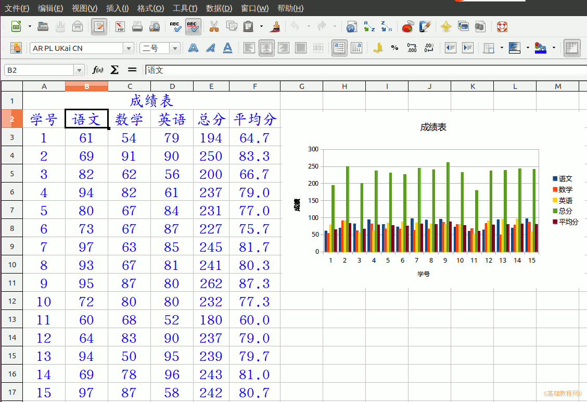

2015-2016 第一学期七年级电子表格和音视频编辑教学设计
作者：TeliuTe 来源：基础教程网
十五、 返回目录 下一课
（一）教学设计
1、学习目标：
2、注意事项：绕过弯来，既不要跳也不要落，一楼过了二楼
3、教学过程：
1）教师准备学案和板书；
2）学生整队进入，开机抄黑板上笔记；
3）教师讲解板书演示操作；
4）学生打指法、日志、完成操作；
5）教师打勾记录学生指法成绩，检查日志和操作；
注：学生抄完笔记就开始打指法、日志，老师讲完后再继续完成；
操作图示：

（二）板书设计(学生笔记)、课后记
15学会插入图表
1.制作好表头
2.从语文开始框选
3.点插入图表
4.最后输入主标题和坐标轴
第15课 学会插入图表
1.表头，15人成绩，随机函数
2.从语文框选整齐表格
3.点“插入，图表”
4.第4步，输入主标题，坐标轴
--
2016年05月16日 星期一 17:51
--
容易忘记框选，直接整个表格做图表了
还有漏掉标题行的，框选的时候，删除要空白处点一下再删，退格、删除都行
--
做得很快，2班学生抽去综合实践拍录像了，3、4班语文留学生了
后面的课不用讲太多，会有很多其他因素，明天8（2）的课语文要了
--
天气热了，穿外套都出汗，要过夏天了，口腔溃疡说话跟吃糖一样
做得挺快的，基本上没什么难度，把图表的意思说一下，怎么看图表
--
优点是美观，颜色好，一目了然
跟表格的意思是一样的，双击一下可以看到框选是不是漏选了什么
--
下节课开始做多媒体了，让带上耳机来试一试
截取，单声道，放大音量，降噪，还有啥，估计也可以吧
--
返回目录 下一课
本教程由86团学校TeliuTe制作|著作权所有
基础教程网：http://teliute.org/
美丽的校园……
转载和引用本站内容，请保留作者和本站链接。